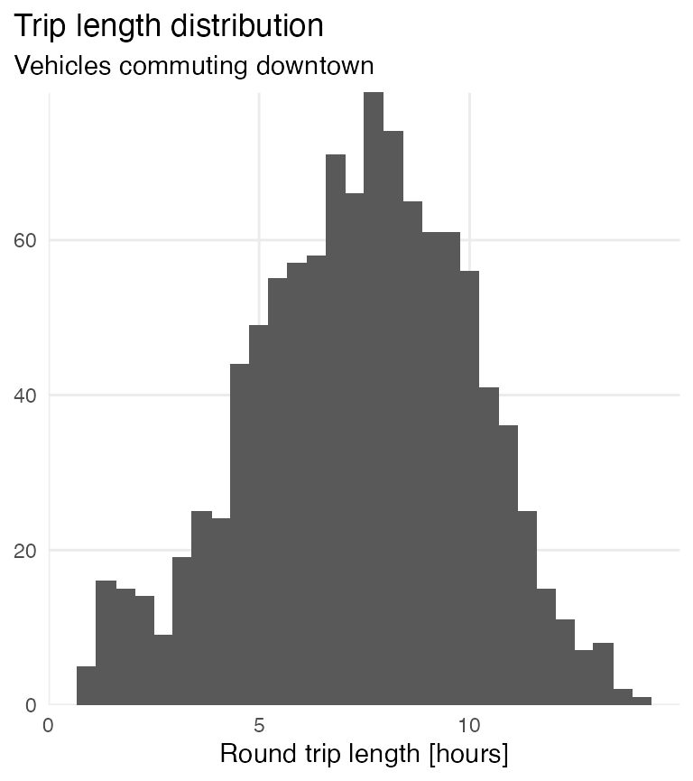

conjecture.Rmdconjecture() is the black swan of the sift family. If you encounter the type of eccentric datasets conjecture is designed to tackle, you’ll be glad you read this vignette.
At its heart, conjecture is a reshaping operation similar to tidyr::pivot_wider(). However, the intended application for conjecture is more idiosyncratic than that of pivot_wider. This vignette illustrates the basic aspects of such an application.
The comms dataset contains a time-series of radio transmissions.
library(sift)
library(dplyr)
library(tidyr)
comms
#> # A tibble: 50,000 x 4
#> station timestamp msg_code type
#> <chr> <dttm> <int> <chr>
#> 1 D 1999-01-21 03:37:57 2537 send
#> 2 C 1999-01-24 11:52:07 720 send
#> 3 D 1999-01-25 03:12:31 1332 receive
#> 4 D 1999-01-25 11:46:18 2959 receive
#> 5 B 1999-01-25 13:43:17 512 receive
#> 6 A 1999-01-25 19:08:25 2197 receive
#> 7 B 1999-01-25 19:26:43 986 receive
#> 8 A 1999-01-25 23:13:40 2851 receive
#> 9 B 1999-01-26 04:04:34 2108 receive
#> 10 D 1999-01-26 11:50:58 2531 send
#> # … with 49,990 more rowsA few notes:
msg_code.msg_code can be repeated multiple times (see below).msg_code.
comms %>%
filter(station == "C",
msg_code == 3060)
#> # A tibble: 14 x 4
#> station timestamp msg_code type
#> <chr> <dttm> <int> <chr>
#> 1 C 1999-02-10 01:33:11 3060 send
#> 2 C 1999-02-11 21:43:31 3060 receive
#> 3 C 1999-02-14 17:07:35 3060 send
#> 4 C 1999-02-17 08:31:48 3060 receive
#> 5 C 1999-02-18 11:33:57 3060 receive
#> 6 C 1999-02-19 00:43:25 3060 receive
#> 7 C 1999-02-20 23:24:25 3060 send
#> 8 C 1999-02-21 03:00:18 3060 send
#> 9 C 1999-02-21 19:13:55 3060 send
#> 10 C 1999-02-22 09:38:07 3060 receive
#> 11 C 1999-02-22 14:39:10 3060 send
#> 12 C 1999-02-26 09:41:56 3060 receive
#> 13 C 1999-02-28 23:35:59 3060 receive
#> 14 C 1999-03-01 05:54:49 3060 receiveSuppose we wish to restructure comms so that the “natural” pairing of send + receive transmissions is more apparent. Since there is no explicit information linking these rows together, we “conjecture” that, for a given send transmission (anterior), the corresponding receive transmission (posterior) is the closest observation measured by timestamp.
conjecture() always takes 4 arguments.
comms).timestamp).type)."send").
comms_conjecture <- conjecture(comms, # dataset to reshape.
timestamp, # <dttm> friendly. must be coercible to numeric.
type, # any type of atomic vector is fine.
"send") # we could flip our logic and supply "receive" instead.
comms_conjecture
#> # A tibble: 24,958 x 4
#> station msg_code send receive
#> <chr> <int> <dttm> <dttm>
#> 1 D 2537 1999-01-21 03:37:57 1999-02-15 21:56:29
#> 2 C 720 1999-01-24 11:52:07 1999-02-22 12:24:57
#> 3 D 2531 1999-01-26 11:50:58 1999-02-09 07:14:33
#> 4 D 2992 1999-01-27 02:48:56 1999-02-22 12:05:55
#> 5 A 2262 1999-01-27 09:19:56 1999-02-11 19:43:42
#> 6 B 1785 1999-01-27 12:11:04 1999-02-07 03:07:50
#> 7 C 1624 1999-01-27 15:33:09 1999-02-20 05:07:54
#> 8 C 2280 1999-01-27 20:06:18 1999-02-18 11:25:13
#> 9 B 1170 1999-01-28 00:55:33 NA
#> 10 B 2137 1999-01-28 02:30:30 1999-02-26 17:13:21
#> # … with 24,948 more rowsWe can partially achieve the same result with pivot_wider.
comms_pivot <- comms %>%
pivot_wider(names_from = type,
values_from = timestamp,
values_fn = first) %>%
filter(receive > send)
comms_pivot
#> # A tibble: 4,734 x 4
#> station msg_code send receive
#> <chr> <int> <dttm> <dttm>
#> 1 D 2537 1999-01-21 03:37:57 1999-02-15 21:56:29
#> 2 C 720 1999-01-24 11:52:07 1999-02-22 12:24:57
#> 3 D 2531 1999-01-26 11:50:58 1999-02-09 07:14:33
#> 4 D 2992 1999-01-27 02:48:56 1999-02-22 12:05:55
#> 5 A 2262 1999-01-27 09:19:56 1999-02-11 19:43:42
#> 6 B 1785 1999-01-27 12:11:04 1999-02-07 03:07:50
#> 7 C 1624 1999-01-27 15:33:09 1999-02-20 05:07:54
#> 8 C 2280 1999-01-27 20:06:18 1999-02-18 11:25:13
#> 9 B 2137 1999-01-28 02:30:30 1999-02-26 17:13:21
#> 10 A 924 1999-01-28 18:41:03 1999-02-17 04:50:19
#> # … with 4,724 more rowsNotice that pivot_wider produces 4734 rows compared to 24958 in comms_conjecture. What pairs are found in comms_conjecture that aren’t captured in comms_pivot?
First, there a quite a few transmissions that do not elicit a response. conjecture doesn’t sweep these under the rug.
comms_pivot %>%
filter(is.na(receive))
#> # A tibble: 0 x 4
#> # … with 4 variables: station <chr>, msg_code <int>, send <dttm>,
#> # receive <dttm>
comms_conjecture %>%
filter(is.na(receive))
#> # A tibble: 10,857 x 4
#> station msg_code send receive
#> <chr> <int> <dttm> <dttm>
#> 1 B 1170 1999-01-28 00:55:33 NA
#> 2 D 2258 1999-01-28 19:32:47 NA
#> 3 D 1519 1999-01-29 02:38:16 NA
#> 4 C 1799 1999-01-29 13:02:48 NA
#> 5 A 132 1999-01-29 18:21:29 NA
#> 6 C 1542 1999-01-30 04:57:17 NA
#> 7 B 791 1999-01-30 05:08:52 NA
#> 8 A 1548 1999-01-30 11:09:38 NA
#> 9 A 100 1999-01-30 15:55:40 NA
#> 10 C 2900 1999-01-30 20:18:50 NA
#> # … with 10,847 more rowsSecond, our call to pivot_wider only returned the “first viable pairs” within each combination of station + msg_code. On the other hand, comms_conjecture contains 3 (4 including missing value) viable pairs for the below combination.
comms_pivot %>%
filter(station == "A",
msg_code == 221)
#> # A tibble: 1 x 4
#> station msg_code send receive
#> <chr> <int> <dttm> <dttm>
#> 1 A 221 1999-02-05 16:52:22 1999-02-10 21:37:52
comms_conjecture %>%
filter(station == "A",
msg_code == 221)
#> # A tibble: 4 x 4
#> station msg_code send receive
#> <chr> <int> <dttm> <dttm>
#> 1 A 221 1999-02-05 16:52:22 1999-02-10 21:37:52
#> 2 A 221 1999-02-11 15:38:03 1999-02-18 10:37:46
#> 3 A 221 1999-02-19 01:43:27 1999-02-21 12:29:59
#> 4 A 221 1999-03-01 07:26:50 NAThe inclusion of multiple pairs for a given station + msg_code combination is the touchstone of conjecture.
We’ll use a small fragment from comms to illustrate how conjecture works.
comms_small <- comms %>%
filter(station == "A",
msg_code == 221)
comms_small
#> # A tibble: 7 x 4
#> station timestamp msg_code type
#> <chr> <dttm> <int> <chr>
#> 1 A 1999-02-05 16:52:22 221 send
#> 2 A 1999-02-10 21:37:52 221 receive
#> 3 A 1999-02-11 15:38:03 221 send
#> 4 A 1999-02-18 10:37:46 221 receive
#> 5 A 1999-02-19 01:43:27 221 send
#> 6 A 1999-02-21 12:29:59 221 receive
#> 7 A 1999-03-01 07:26:50 221 sendWe can readily identify the send/receive pairs from the above observations. But how does conjecture accomplish this programmatically?
sort_by = timestamps) are separated into two vectors (specified by names_from = type).
send <- comms_small %>% filter(type == "send") %>% pull(timestamp) %>% sort()
send
#> [1] "1999-02-05 16:52:22 CST" "1999-02-11 15:38:03 CST"
#> [3] "1999-02-19 01:43:27 CST" "1999-03-01 07:26:50 CST"
receive <- comms_small %>% filter(type == "receive") %>% pull(timestamp) %>% sort()
receive
#> [1] "1999-02-10 21:37:52 CST" "1999-02-18 10:37:46 CST"
#> [3] "1999-02-21 12:29:59 CST"send, with a nested loop for each element in receive. We can invert this hierarchy by setting names_first = "receive" instead.
output <- integer(length = length(send))
for (i in seq_along(send)) {
output[i] <- NA_integer_
for (j in seq_along(receive)) {
if (is.na(receive[j])) {
next
} else if (receive[j] > send[i]) {
output[i] <- j
break
} else {
next
}
}
}
tibble(send, receive = receive[output])
#> # A tibble: 4 x 2
#> send receive
#> <dttm> <dttm>
#> 1 1999-02-05 16:52:22 1999-02-10 21:37:52
#> 2 1999-02-11 15:38:03 1999-02-18 10:37:46
#> 3 1999-02-19 01:43:27 1999-02-21 12:29:59
#> 4 1999-03-01 07:26:50 NAConceptually, the above process flow is an accurate depiction of conjecture - though the underlying structure is more robust:
There is an important consequence associated with the above logic. We’ll demonstrate by removing all but one of the receive elements from comms_small.
# from comms small
receive <- receive[3]
# rerun the algorithm
for (i in seq_along(send)) {
output[i] <- NA_integer_
for (j in seq_along(receive)) {
if (is.na(receive[j])) {
next
} else if (receive[j] > send[i]) {
output[i] <- j
break
} else {
next
}
}
}
tibble(send, receive = receive[output])
#> # A tibble: 4 x 2
#> send receive
#> <dttm> <dttm>
#> 1 1999-02-05 16:52:22 1999-02-21 12:29:59
#> 2 1999-02-11 15:38:03 1999-02-21 12:29:59
#> 3 1999-02-19 01:43:27 1999-02-21 12:29:59
#> 4 1999-03-01 07:26:50 NAWhy does 1999-02-21 12:29:59 appear 3 times? Recall:
“for a given send transmission (anterior), the corresponding receive transmission (posterior) is the closest observation measured by timestamp.”
The above result is in accordance with this statement. However, at some point in the future, I may add the ability to drop repeat occurrences of posterior timestamps, which would produce the following result instead.
#> # A tibble: 4 x 2
#> send receive
#> <dttm> <dttm>
#> 1 1999-02-05 16:52:22 1999-02-21 12:29:59
#> 2 1999-02-11 15:38:03 NA
#> 3 1999-02-19 01:43:27 NA
#> 4 1999-03-01 07:26:50 NAThe express dataset contains toll records for northbound and southbound vehicles over the course of one business day.
library(readr)
express <- read_csv("https://raw.githubusercontent.com/sccmckenzie/mopac/master/inst/extdata/express.csv", locale = locale(tz = "US/Central"))
express
#> # A tibble: 13,032 x 6
#> direction time plate make model color
#> <chr> <dttm> <chr> <chr> <chr> <chr>
#> 1 North 2020-05-20 05:00:33 DZR-4059 Mercedes S-Series Black
#> 2 North 2020-05-20 05:01:13 GRG-4300 Nissan Altima Grey
#> 3 North 2020-05-20 05:03:47 QZS-2886 Mazda 6 White
#> 4 North 2020-05-20 05:04:54 OHK-3972 BMW i1 White
#> 5 North 2020-05-20 05:10:41 EAS-1671 Ford F-250 Silver
#> 6 North 2020-05-20 05:13:53 OKP-7589 Dodge Journey White
#> 7 North 2020-05-20 05:13:55 HNN-1298 Volkswagen Passat Grey
#> 8 North 2020-05-20 05:15:59 EWL-6179 Toyota Venza Grey
#> 9 North 2020-05-20 05:16:01 YVH-4374 GMC Safari White
#> 10 North 2020-05-20 05:18:16 DLU-6055 Nissan Titan Blue
#> # … with 13,022 more rowsSuppose we are interested in vehicles using the express lane both North and South (i.e. commuting to work). It’s up to us to designate an anterior direction. If we are only interested in vehicles commuting downtown, we set names_first = "South".
conjecture(express, time, direction, "South") %>%
drop_na() # We can't assume incomplete pairs are commuting to downtown
#> # A tibble: 1,069 x 6
#> plate make model color South North
#> <chr> <chr> <chr> <chr> <dttm> <dttm>
#> 1 QQA-8430 Nissan 370Z Black 2020-05-20 05:00:16 2020-05-20 14:29:06
#> 2 NTL-6850 Ford Crown Victo… Beige 2020-05-20 05:04:39 2020-05-20 18:09:47
#> 3 RBF-4890 Infiniti QX60 Grey 2020-05-20 05:04:55 2020-05-20 16:32:07
#> 4 FDX-4994 Ford Fusion Grey 2020-05-20 05:12:38 2020-05-20 15:40:54
#> 5 DFF-5919 Honda Accord White 2020-05-20 05:14:32 2020-05-20 12:41:54
#> 6 CWW-1823 Porsche Panamera Black 2020-05-20 05:19:57 2020-05-20 16:15:45
#> 7 GRZ-3678 Volkswag… Eos Red 2020-05-20 05:21:23 2020-05-20 17:53:49
#> 8 VMV-7990 Mercedes GE-Class Black 2020-05-20 05:23:14 2020-05-20 15:42:00
#> 9 YDR-9931 Mazda 3 White 2020-05-20 05:25:51 2020-05-20 14:46:11
#> 10 BWC-4843 Alfa Rom… Giulia Red 2020-05-20 05:30:50 2020-05-20 16:34:49
#> # … with 1,059 more rows
library(ggplot2)
conjecture(express, time, direction, "South") %>%
drop_na() %>%
mutate(trip_length = difftime(North, South, units = "hours")) %>%
ggplot(aes(trip_length)) +
geom_histogram()